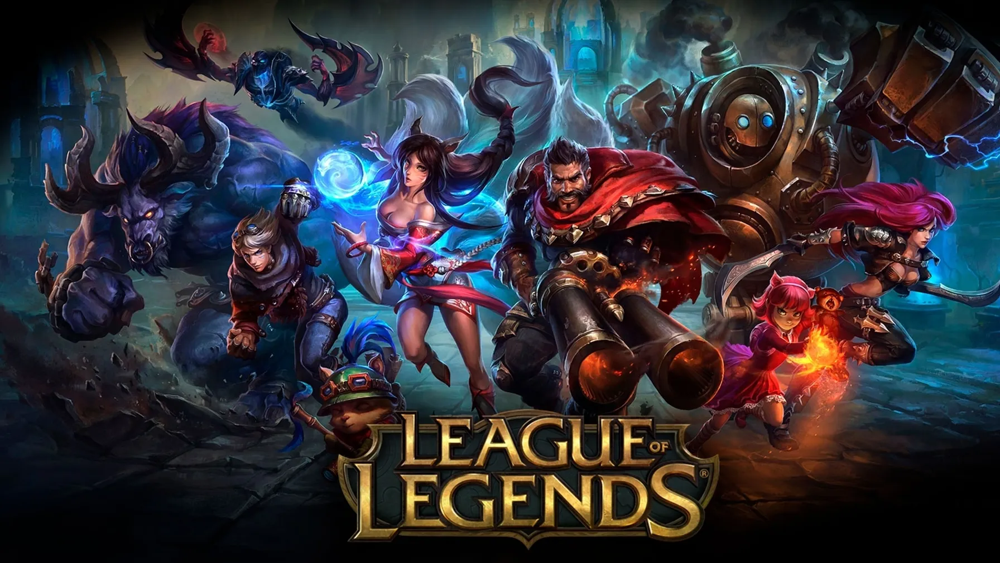

um dos primeiro jogo online que jogui na minha vida
League of Legends (LoL) é um jogo online de estratégia e combate em equipe desenvolvido pela Riot Games, lançado em 2009. No jogo, dois times de cinco jogadores competem entre si em uma arena virtual, com o objetivo de destruir a base inimiga, chamada de Nexus. Cada jogador controla um "campeão", personagem com habilidades únicas, e precisa trabalhar em equipe para vencer os oponentes, usando táticas, reflexos rápidos e conhecimento estratégico. O jogo é um dos mais populares do mundo, com uma vasta comunidade e competições profissionais, como o Campeonato Mundial de League of Legends, atraindo milhões de espectadores.

com uma das musica que mais fez sucessor em 2021 gracas a sua serie Arcane
Arcane, a animação de League of Legends da Netflix, teve uma música de sua trilha sonora divulgada. “Enemy” é assinada pelo Imagine Dragons ao lado do rapper J.I.D. Confira um pouco dela abaixo.